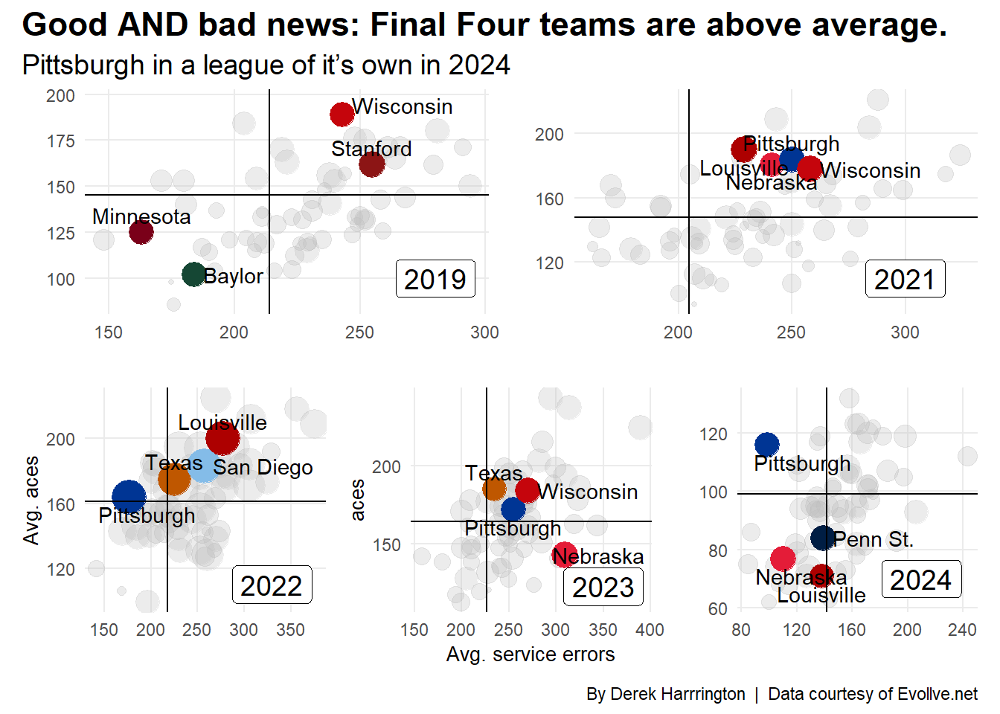

If you’ve been to a volleyball match before, regardless of level, one play summons exasperated groans from the crowd like no other—service errors. Ah, those pesky things!
If your team lost a match that was decided by just a few points, then surely those eight service errors it had were the reason. If it had got those eight serves over and in play, surely the team could have won about half of those points and thus won the match. Right? Possibly. But it’s not that simple.
Often you hear the novice to average fan equate serving to shooting a free throw in basketball. It’s a “free point”. Just you and the ball. Part of that statement is certainly true. It is just you and the ball. But the rest…. meh. A service ace might be equivalent to the free point aspect, but you can also nail a nasty serve and the other team still sides out.
I struggled with equating serving to other sports when I discussed it with people who might be new to the sport too. Then I heard how former Oregon coach Jim Moore described it. Serving is more like an aggressive man-to-man defense in basketball. Occasionally you’ll get beat backdoor by it (missed serves), but the long-term goal is to wear the other team down and make them second guess themselves (knocking the other team out-of-system).
The game has evolved where just getting the ball “over and in” no longer works.
OK, fair enough. But then what does an acceptable number of service errors look like? The answer might surprise you.
The first question is what’s the current serving trend across all NCAA Division I teams from the 2019-2024 season?
Let’s take a look.
And remember, the 2020 season is an anomaly because of COVID and teams played vastly different amounts of games (some teams didn’t even play a single game). In addition, the 2024 data is incomplete as every team had played less than 20 games at the time this data was acquired.
Code
#load in the dataserves <-read.csv("data/derek_aces_errors.csv")#create a new field called service_error_ptPct for later useserve_info <- serves |>group_by(team_name, season)|>mutate(service_error_ptPct=service_errors/(points_played-points_won)*100 )|>arrange(desc(service_error_ptPct))#make a new data frame called serve_table to find the average aces and errors for each seasonserve_table <- serves|>group_by(season)|>drop_na()|>summarise(ace_average=mean(aces),errors=mean(service_errors) )
Code
#table for average aces and errors for last 6 yearsserve_table |>gt()|>cols_label(ace_average ="Avg. Aces",errors ="Avg. Errors",season ="Season" ) |>tab_header(title ="Teams are serving more aggressively",subtitle ="Stunning increase in aces and errors in 2022" )|>tab_style(style =cell_text(color ="black", weight ="bold", align ="left"),locations =cells_title("title") ) |>tab_style(style =cell_text(color ="black", align ="left"),locations =cells_title("subtitle") )|>tab_source_note(source_note =md("By **Derek Harrington** <br>Data courtesy of **Evollve.net**<br> *2020 was COVID; 2024 doesn't represent full season"))|>tab_style(locations =cells_column_labels(columns =everything()),style =list(cell_borders(sides ="bottom", weight =px(3)),cell_text(weight ="bold", size =12)))|>opt_row_striping() |>opt_table_lines("none") |>fmt_number(columns =c(ace_average, errors),decimals =0)|>tab_style(style =list(cell_fill(color ="white"),cell_text(color ="darkgreen", weight="bold") ),locations =cells_body(rows = season =="2022" ) )
Teams are serving more aggressively
Stunning increase in aces and errors in 2022
Season
Avg. Aces
Avg. Errors
2019
145
214
2020
72
102
2021
148
205
2022
161
217
2023
164
226
2024
99
141
By Derek Harrington Data courtesy of Evollve.net *2020 was COVID; 2024 doesn’t represent full season
The first thing that jumps out to me (after eliminating the 2020 season) is that both aces and errors are increasing nearly every year. The lone exception was 2021 which had a slight dip in errors compared to the 2019 season. But look at the difference between 2021 and 2022 in both aces and errors. They both rocketed.
The average number of aces…. across ALL NCAA Division I teams…. increased by 13! Remember, this is an average, so an increase of 13 is stunning. Not surprisingly, the number of errors also rose dramatically, by 12 errors per team.
The 2023 season still had an increase in aces, although it was a modest three this time. However, teams had an increase of nearly nine more errors. It will be interesting to see the final 2024 numbers to see if the overall trend has continued.
Well OK. So, aces and errors are increasing. That’s probably coming from some mid-majors or tiny colleges and universities that win maybe five games a year, right? I admit, that’s a reasonable guess.
So, let’s change the focus to teams from the Power Five (or four for 2024) conferences. Specifically, let’s look at where the Final Four teams from the 2019-2023 seasons fall. Of course, I’m not going to include 2020. Nothing personal, but the data is a mess because of the wild variance in matches played. And, let’s throw in the 2024 season as a comparison and use the four teams who have been in the top four for the majority of the season.
If you’ve never heard of a bubble chart before, it’s not too complicated, but it does need some explanation. First, I’m comparing a team’s season average of aces (on the y-axis) to their season average of service errors (on the x-axis). The “bubble” represents how many matches the team won that year. So, the bigger the bubble, the more wins the team had. The smaller, well you get the idea. I also included the average number of aces (horizontal line) and errors (vertical line) for each year across all Division I teams.
Before you look, what do you expect to see? Are teams that are higher-error the perennial powers? Or are those teams low error and rack up the aces?
The prevailing thought is probably that Final Four teams (and teams with a lot of wins, i.e. big bubbles) are low-error with a high number of aces (this would put them in the upper-left quadrant in each graph). Or perhaps, they may not have many aces, but they also don’t beat themselves with a lot of errors (the bottom-left quadrant). What we see though is a different and interesting story. Of the 16 Final Four teams from 2019-2023 (again, not counting 2020), only three teams fall into those quadrants!
Both Minnesota and Baylor in 2019 were below average in aces and errors. This means they weren’t particularly tough serving teams (in terms of sheer number of aces), but they also didn’t give away a lot of free points from the service line. Neither advanced to the championship match.
In 2022, Pittsburgh barely fell into that upper-left quadrant where we might expect the cream-of-the-crop teams to be. Spoiler alert, Pittsburgh also lost in the semifinals that year, albeit in five sets to Louisville.
All the other teams, with the exception of the 2023 Nebraska team, were in the upper-right quadrant. That means they had above-average aces but also above-average service errors. So, it goes against what conventional thinking would suggest.
Interestingly, you might expect the majority of the small bubbles (or teams with losing records) to be in the bottom-right quadrant. Meaning they served up less than the average in aces and also had more than average service errors. The 2023 Nebraska team, then, defies this logic as the Huskers only lost two games the entire season as the national runners-up. The team that won? Texas. Who was statistically the best serving team (in terms of aces and errors) at the 2023 Final Four.
Looking at the 2024 season to date, the Pittsburgh Panthers are in a class of their own. They are hammering teams from the service line and aren’t giving away free points either. Can they keep up that pace or will they regress to the mean?
This brings me to my next discussion. A prevailing thought from Gold Medal Squared is a team should miss approximately 10% of its serves. Any more and you’re being a little too aggressive and giving away too many points. Less and you’re probably not serving tough enough and having problems stopping other teams from scoring.
While the data is out there to calculate if the top teams are serving at that rate, I thought it would be interesting to look at how many of the total points a team lost in a season were due to service errors. And surprise! The answer again is a little unexpected.
Code
#use the serving info to see what teams are being hurt by service errors in the points they don't winperrenial <-c("Stanford", "Texas", "Wisconsin", "Louisville", "Pittsburgh", "Nebraska", "Penn St.", "Kentucky", "Minnesota", "Oregon", "Florida", "Purdue")serve_er_pct <- serve_info |>filter(team_name %in% perrenial)|>arrange(desc(service_error_ptPct)) |>select(season, team_name, service_error_ptPct)ff<-read.csv("data/finalfourteams.csv")ff19 <- ff |>filter(season=="2019")ff20 <- ff |>filter(season=="2020")ff21 <- ff |>filter(season=="2021")ff22 <- ff |>filter(season=="2022")ff23 <- ff |>filter(season=="2023")#plot with facet wrapserve_er_pct |>ggplot()+geom_line(data=serve_er_pct, aes(x = season, y = service_error_ptPct, group=team_name))+scale_y_continuous(limits=c(4.5,20))+scale_x_continuous(breaks =c(2019, 2020, 2021, 2022, 2023, 2024), limits=c(2018.8, 2024.2))+facet_wrap(~team_name)+geom_point(data=ff19, aes(x=season, y=service_error_ptPct), color="red", size=2)+geom_point(data=ff20, aes(x=season, y=service_error_ptPct), color="red",size=2)+geom_point(data=ff21, aes(x=season, y=service_error_ptPct), color="red", size=2)+geom_point(data=ff22, aes(x=season, y=service_error_ptPct), color="red", size=2)+geom_point(data=ff23, aes(x=season, y=service_error_ptPct), color="red", size=2)+labs(title ="Top teams lose notable amount of points via service errors",subtitle ="Purdue bucks this trend, but hasn't made a Final Four<br><span style = 'color:red;'>Red</span> indicates Final Four year",y ="% of service errors in total points lost", x ="Season",caption ="By: Derek Harrington | Data courtesy of Evollve.net" ) +theme_minimal() +theme(plot.title =element_text(size =16, face ="bold"),plot.subtitle =element_textbox_simple(size =11),axis.title =element_text(size =16),panel.grid.minor =element_blank(),axis.text.x =element_text(angle =60, hjust =1))

What this graph shows is the amount (in a percentage) of the total points lost in a season due to missed serves. So, for example, let’s say Florida lost a hypothetical 1,000 points in 2019. The value of the y-axis for Florida for 2019 is about 10%. This would mean that of those 1,000 points that Florida lost, 100 of them were missed serves.
For this graph, I used teams that have consistently been in or around the top 10 for the comparisons. What I found interesting is that Purdue historically hasn’t given teams anything free from the service line, but the Boilermakers haven’t been to a Final Four (although they’ve been tantalizingly close). Could this be a hint that they need to serve a bit more aggressively? Maybe.
The other notable thing to me was that EVERY Final Four team (except Pittsburgh in 2022) was giving up between 10-15% of its points due to service errors. That seems like a large amount, but again, the trade off for service errors is getting the other team out-of-system and giving your team opportunities to score.
So, what’s the lesson here? Clearly, the simplistic “get the ball over and in” and “serving is like shooting free throws” mantras don’t work anymore. And there are numerous reasons for that. The parity across Division I is remarkable. Look back even 15 years ago and the list of teams that had a legitimate shot to win a national championship was maybe five teams max. Now that list has expanded to 10 possible teams in any given year.
Passing is continuously improving from year to year. There are more players at an elite passing level than there were in the past, and that’s a testament to the training being received in clubs and high schools. You have to serve more aggressively if you want to knock other teams out-of-system.
Offenses are also evolving at a rapid pace. Gone are the days of the high “moon-ball offenses”. Now teams want to run their offense at lightning-quick tempo and use the athleticism of their players to beat the blocks and defenses. And I’m not one to complain, it’s fun to see the sport evolve at such a rapid pace, and those offenses are quite entertaining.
There are other reasons as well, but these two are probably the main reasons that explain the shift in mentality regarding service errors.
So the next time there’s a missed serve, maybe don’t make that groan so audible, and remember that there’s a bigger strategy in play. However, let’s try to not miss those serves when it’s 13 all in the fifth set.